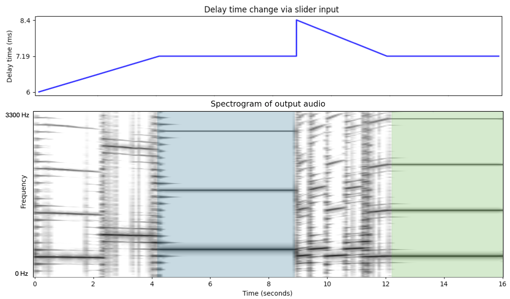
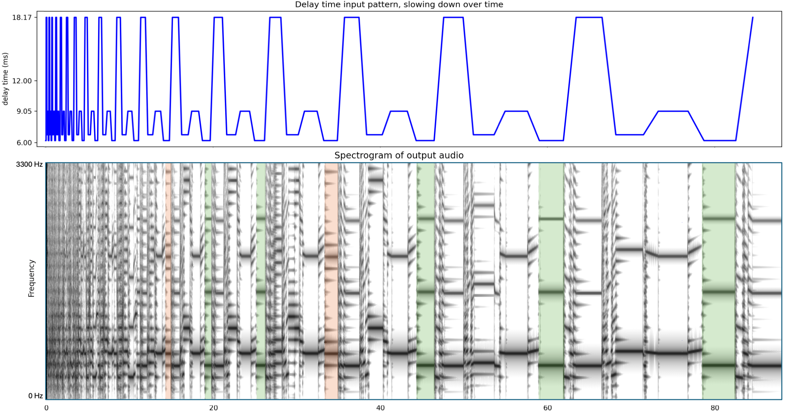

Following the Material: Paying Attention to Hysteresis in Musical Interactions
Abstract
This article explores the interactive properties of digital feedback synthesis processes. The ECHO journal's digitally native format is leveraged to present interactive web audio code examples. These examples support an examination of hysteresis in feedback synthesis, and the affordances this can bring to creative interactions. These simplified examples serve as a path towards understanding and communicating some of the less obvious aspects of playing acoustic musical instruments: particularly blown or bowed instruments. Identifying these kinds of details in the material of musical tools is viewed as an important step towards articulating our relationships with creative tools and creative processes.
1) Introduction
One of the most engaging dimensions of feedback as a creative medium is the experience of playing with it. The word "play" here feels particularly apt: feedback can be responsive, malleable, explorable and unpredictable. The domain under consideration here is sound, and particularly digital sound synthesis.
This article presents a range of interactive feedback examples that demonstrate and explore some of the rich behavioural properties that can occur in feedback systems. The motivation is to leverage the media-rich nature of the ECHO journal to present examples that the reader can experience for themselves in order to support a more detailed engagement with and discussion of key interactive behaviours. Of particular interest are:
This article presents a range of interactive feedback examples that demonstrate and explore some of the rich behavioural properties that can occur in feedback systems. Of particular interest are:
- hysteresis: the potential for past input to significantly influence subsequent behaviour;
- the importance of both the speed and timing of input actions in such systems;
- the potential for a rich, explorable landscape of possibility to emerge from these complexities, even with a single, bounded input dimension.
More generally, this research seeks to illuminate the pathways of activity that are hidden in materials as a way to shed light on the relationship between specific materials and the creative practices that engage those tools. The interactive behaviours here can be viewed as examples of the "flow" of matter (Ingold, 2010) that guide engagements with that material. This connects more broadly with recent materialist turns and the emerging focus on the agency of musical instruments in contemporary music scholarship (Sergeant et al., 2020) and organology (Magnusson, 2021; Rossi Rognoni, 2019).
Section 2 first introduces some background on feedback and music and explores existing work on interaction in that space. Section 3 introduces the interactive examples. Section 4 then explores hysteresis, speed and timing in the relation to the examples.
It is recommended that the reader engage with the interactive examples as they read, particularly in Section 4 where there are specific suggestions of behaviours to look for and how they might be found with the input sliders. The code for the examples can be found at github.com/tommmmudd/interactive-hysteresis.
2) Background
Feedback has become a common medium for music making in a wide variety of musical practices; Sanfilippo & Valle (2013), van Eck (2017), Magnusson et al (2022), and the recent ECHO issue on feedback (Pultz Melbye, 2022) provide an overview and a range of examples. The concept of feedback can be broadened to include a dynamical systems perspective, systems which are by their nature feedback systems. The potential for complex behaviours in dynamical systems has been explored in detail elsewhere (e.g. see Jost, 2005), and has frequently been drawn on for musical ends (Choi, 1994; Dunn, 2007; Pirrò, 2017; Pressing, 1988), and is helpful to consider in relation to interaction (Mudd et al., 2019; Pirrò, 2017).
Beyond the technical differences in feedback systems, there can be important differences in how those systems are designed, engaged with, conceived of, and played by musicians. One key distinction that proposed here is between a system-like view of the feedback, and a more instrumental view. A systems perspective could be more closely associated with Alvin Lucier, Agostino Di Scipio and Cathy van Eck: feedback situations are set up and are play out over time, with or without performer, audience or algorithmic intervention (Di Scipio, 2003; Eck, 2017; Saladin, 2017). An instrumental perspective places the feedback inside an instrument or instrumental configuration in some way, encouraging a constant engagement with the behaviour and sounding output. This can be seen in instruments such as the Halldorophone (Úlfarsson, 2018), feedback cellos and double basses (Eldridge & Kiefer, 2017; Liontiris, 2018; Melbye, 2021) or feedback percussion (Kiefer, 2024; Lupone & Seno, 2006). The latter approach is useful in the context of this article as it puts feedback instruments into closer dialogue with acoustic instruments. There is of course a continuum between these perspectives, and there need not be any technical difference in their construction. For example, no-input mixer (Mudd, 2023) could be approached from either perspective.
Alongside the history of feedback in musical practice, it is not uncommon to find acoustic composers and performers explicitly drawn to the complex interactive properties outlined in this article. Scott McLaughlin's work is notable in this respect, in that there is a close correspondence between his work with feedback (McLaughlin, 2022a), and his work with purely acoustic instruments (McLaughlin, 2022c, 2022b). McLauglin's Garden of Forking Paths project with the clarinet makes this particularly clear in that it foregrounds "the unpredictable phenomena found across the strata and seams of clarinet sound-production, the transition points in its sonic "phase-space"." (2022b)1. While it becomes more difficult to trace the influence of these interactive behaviours in other musical contexts, this doesn't mean that they aren't playing a significant role.
2.1) Digital Musical Interactions
In the context of digital music making, the nonlinear dynamical behaviours associated with feedback have been pointed to as useful ways to complicate ideas of control, and to support rich interactive relationships between musician and instrument (Di Scipio, 2003; Eldridge et al., 2021; Jordà, 2004). The complexity of interaction found in many acoustic instruments does not tend to exist in digital musical instruments by default. Many engagements with digital musical tools are exemplified by either the one-to-one mapping, where all possible controls are made available to the user to adjust individually, or increasingly, few-to-many mappings where the user provides input to the higher-level processes that are responsible for the management of the lower-level detail, as with presets, macros, or AI control features.
McPherson et al. (2025) highlight the potential problem with the dominance of "mapping" as the only way to characterise digital musical interactions: that it is just one type of conceptual metaphor for this situation. Feedback is highlighted by the authors as a process that can destabilise the typically unidirectional nature of mapping. There is often no clear notion of the specific perceptual aspect of the audio that is being controlled, and the system may respond differently to the same input at different times. This effect can sometimes be so extreme that the input may appear to do very little at certain times and only a drastic change is sufficient to dislodge the system away from a particular attractor into a different state. At other times, subtle changes in input may have significant repercussions.
McPherson et al (ibid.) draw on Linson (2011) who highlights the potential for notions of "mapping" to conflate mechanical cause and effect with the translation of a person's thoughts into actions. This conflation, I would argue, is an issue in trying to understand what is happening when listening to someone play certain instruments, particularly those with the kinds of interactive complexity found in feedback, and in blown and bowed acoustic instruments. Hearing the result doesn't necessarily tell you much about what the artist had to do to get there, the kinds of processes they are navigating, the pathways within the instrument's behaviour that map out particular kinds of action, and so on.
Exploring the simple feedback examples presented here hopefully highlights at least an initial gap between intention and expectation on the one hand, and mechanical cause and effect on the other. As a musician continues to engage with their instrument over longer time periods — whether a saxophone or a feedback system — the mechanical complexities are not removed to leave the instrument as a pure conduit from thought to action, but support the development of a materially tethered language through which ideas are formed in in the first place. From this point of view, understanding the mechanical, material nature of the complex interaction is fundamental to understanding the basis of the language that has been developed and internalised by players of the instrument.
3) Approach to the interactive examples
The interactive examples in the next section are developed as microcosms of feedback interaction. They are intentionally limited to a single dimension.
They are written in JavaScript with the Web Audio API (Adenot & Toy, 2018). To start a particular example, press the "play" button. The other buttons provide preset input patterns for comparison:
- "Ramp": A slow movement from the minimum to the maximum input value,
- "Erratic": Randomised movements of the input value, linearly smoothed,
- "Pattern": A repetitive pattern of four input values, that slows down over time. Changes are smoothed across the first third of the time interval of each change.
Recreating particular behaviours in such unstable systems is not straightforward. Video and audio examples are therefore included as demonstrations, alongside images representing relationships between changes in input and output sounds.
4) Interactive Behaviours
4.1 Hysteresis
Hysteresis is a system's dependence not only on current input, but also on prior input as manifested in the current state of the system. This could be considered the essence of feedback: where the output is sent back to the input in some manner to influence subsequent behaviour. From an interaction perspective, it's important to distinguish between a simple delay-based hysteresis, which manifests only as a time-lag in the interaction (relaxation hysteresis) and a kind of hysteresis that leads to a bifurcation, a break in behaviour that doesn't necessarily permit a simple return to prior states. Both kinds of behaviour are exhibited in these interactions with feedback, but this article seeks to draw attention to the latter.
Acoustic instruments exhibit this kind of hysteresis in a variety of different ways. The effect on interaction can be significant, such as in brass instruments where a certain threshold of blowing pressure must be exceeded to initiate a note, but once a note has begun, the pressure can be reduced below this threshold and while sustaining the oscillation (Campbell et al., 2021, p. 239). Hysteresis can be found in a wide variety of other acoustic situations, such as wind instruments (Bocanegra & Borelli, 2019), bowed strings (Smith & Woodhouse, 2000), and in the subtleties of piano hammer felt (Stulov, 1995).
Hysteresis can be very significant in interactions with feedback systems and can be well represented even in the reduced interactive examples presented here. Figure 1 shows the response to changes in input (delay time) across a 16 second time frame. A delay time of 7.19 milliseconds is arrived at from two different directions, first from lower delay times, then from higher delay times. The stable tone produced with the same final input is different in the two situations as shown in the blue and green highlighting.
Figure 2: Hysteresis example using example 1. A delay time of 7.19ms is arrived at from two different directions, resulting in two different stable tones. The first stable tone is shown with blue highlighting, the second stable tone is shown in green. Spectrogram limited to 0-2.7 kHz range. This can be heard in Audio example 1 below.
Audio example 1: audio relating to Figure 1 demonstrating hysteresis.
This can be heard in audio example 1. It is perhaps better to experience this for yourself though by trying out similar interactions with the slider for interactive example 1. Figure 1 is only one example of many possible manifestations of this kind of locking hysteresis within the interactive example.
To highlight the potential for varied output and behaviour in even a very small part of the input range, a highly constrained version is provided in example 2 below, limiting the input range to 8-10ms. Even within this 2ms range, the hysteresis can be experienced, and so the relationship between input and output can be explored. Using the "pattern" demo button makes this particularly clear.
Example 3 below presents the same feedback network, but links the slider to a different parameter for contrast: here it controls the filter cutoff frequency. There are similarities and differences with the above examples: the filter still shapes the available stable pitches and changes can therefore destabilise a stable state. The same kinds of locking hysteresis behaviours in the system can be found.
4.2) Timing and Speed
The iterative nature of feedback systems also places a focus on the time-based nature of the interaction. Static input doesn't imply static output: the system can develop over time without changes in performer activity. Campbell et al. (2021, p. 234) provide a simple example of this in brass instruments where there can be a significant latency between the player increasing the air pressure through the mouthpiece, and the oscillation regime developing. This adds a complexity to how players must manage the transition from silence to sustained oscillations.
When considered in relation to hysteresis, this time dependence can be significant in how the system's state develops. Waiting longer before making a particular change to the input may mean the system has developed to a new state, from which it will react differently to the delayed input compared with the result if the input had been changed sooner. Below are some examples of time-based interactions that can be experienced with the simple interactive examples in this article:
- Input remains constant, but the output transitions slowly to a different stable sound and stays on that sound. This kind of development can be found when reducing the delay time in interactive example 1 down to ≈6.73ms. Video example 1 demonstrates this.
- Input remains constant, but the output is unstable, moving back and forth between different tones, or timbres of noise. This is discussed further below in relation to interactive example 4, and an example is shown in video example 2.
- Input moves from point A to point B. Doing so quickly leads to point B sounding a stable tone, X. Doing so more slowly leads to a different stable tone Y at point B. The "pattern" buttons for interactive examples 1 and 2 provide an example of this. This is elaborated on further below.
- Input moves too rapidly for the system to settle into a particular new steady state. Comparing very rapid movements with interactive example 1 or 3 with very slow movements within the same range can demonstrate this.
Video example 1: demonstration of a time-lag behaviour with interactive example 1.
The third behaviour described above is explored in more detail in Figure 2. A repetitive pattern of changes to a delay time is sent to interactive example 1. The speed of the pattern is reduced over time. Variations can be seen in the stable tones produced at particular delay times. The changes in tone produced where the delay time is stable at 18.17 are highlighted in green and orange.
Figure 2: Input data (top) altering the delay time and resultant spectrogram showing changes in behaviour (bottom) as the rate of change of input data slows over the 80s duration. Two different stable tones are highlighted in green and orange that are produced when the delay time is at 18.17ms. This can be heard in Audio example 2 below.
Audio example 2: relating to Figure 2 demonstrating time and rate dependence.
These patterns can be experimented with using the buttons for each example. While the above example relates to interactive example 1, example 2 also exhibits some interesting hysteresis properties. The pattern that emerges is highly dependent on the state of the system at the point where the pattern is started. At least four different stable patterns can be achieved here by starting from different stable tones. Some of these patterns eventually change state to a more stable set of tones as the rate-of-change in the pattern decreases past a certain point.
The intermittency described in bullet point 2 above can be experienced with interactive example 4 for lower values of the filter resonance, particularly in the range 8-10 or 14-16. These states may eventually resolve to stable states as shown in Video example 2, where the output 17 seconds to arrive at a stable state, arriving at a sound that is quite different in pitch and character from the intermittent sounds. This behaviour relates to the kind of intermittency associated with near-chaos behaviours (Lakshmanan & Rajaseekar, 2003, p. 132). The combination of the intermittency and hysteresis reinforces the importance of timing with input gestures: moving away from an intermittent point may lead to very different outcomes depending upon the specific state of the system at that point in time. Where fluctuations are occurring very rapidly, this can therefore lead to very unpredictable outcomes. This kind of intermittency is explored further in Mudd et al. (2019) in relation to the real-time control of dynamical systems.
Example X
Example X: dummy title
Where f(x) represents the x term passed through the bandpass filter bank. The audible output is f(x).
:
Video example 2: demonstration of intermittency with interactive example 4. The input is unchanging, but the output continues to vary - particularly between two relatively stable states - until around 17" where it comes to rest in a different state.
5) Discussion
These interaction complexities are presented here in order to contribute to understandings of creative practice, tool and instrument engagement in music, and conceptions of agency in music interaction.
One aim of the interactive examples provided here is that they demonstrate that the hysteretic property of feedback systems can be a fun, explorable and playful aspect. There can be a pleasure to finding hidden sounds or behaviours. By taking into account not just the present state of the inputs, but also prior input, timing and rate-of-change are brought into play as a key aspect of the playing interaction. The influence that the slider has on the sound is contingent: sometimes sliding left and right may produce only very minor pitch bends, but once a threshold is crossed, a bifurcation occurs and the slider's behaviour is potentially reconfigured. The presence and position of the thresholds is itself contingent on prior input. The system is nevertheless deterministic and may be learned through practice.
I argue here that this provides a helpful exaggeration of the kinds of interactions found in certain acoustic musical instruments. This helps to explain the material factors involved in playing something like a saxophone, a trumpet or a cello: players negotiate these contingencies, guiding their instruments back and forth across different kinds of thresholds to unlock particular kinds of sounds or behaviours. As they push into different regions, the effect a particular keypress, bow movement or variation in breath pressure will have may be reconfigured. While these complexities emerge clearly in acoustics research, they are difficult to articulate and to pay attention to in discussions of musical practice (although as noted above, McLaughlin has made some very helpful inroads on this: 2022b, 2022c). These examples are designed to help bridge that gap to some extent, and to render the interactive behaviours available for more direct study and discussion.
One way to fold these perspectives into existing discussions around technology, organology and perhaps musicology more generally, is to consider the interactive dimensions as a key part of what the instrument knows. The fact that instruments carry musical ideas is well established in these domains. This notion is often framed in terms of human insights that are designed into the instruments: organisations of pitch, tuning systems, attitudes to volume, attitudes to polyphony, etc. Musical instruments can also be said to know things about music (or at least, about sound) that don't need to be explicitly addressed by humans in their design, e.g. the harmonic series and its manifestation in strings and wind instruments; as Magnusson (2009) frames it, they "tacitly encompass the theories of sound in their materiality". Furthermore, they encode ideas about interaction, about how sounds can behave, evolve and transition, and how they respond to human actions. The interactive component can be folded into an epistemic understanding of musical instruments.This research also contributes to contemporary re-evaluations of the nature of creative practice. Ingold argues for a reappraisal of making from a model where artists impose form on things, to a model where artists impose themselves on existing material flows, "intervening in these force-fields and following the lines of flow". This highlights the importance of exploring the nature of these lines of flow to really be able to understand particular creative practices. The interaction behaviours articulated above could be viewed as examples of "lines of flow". Developing a stronger understanding of these kinds of material behaviours is a starting point towards a more materially-informed perspective on creative engagements, and the relationships between those engagements and the tools and mediums that are engaged with.
6) Summary
This article explores the properties of feedback as a creative medium through the aid of simple interactive Web Audio examples. Hysteresis in particular is examined to highlight the contingent nature of control and the significance of timing and rate-of-change in input gestures. The examples are connected to behaviours in acoustic musical instruments such as in blown or bowed instruments, where similar interactive properties are at play. The interactive feedback examples seek to exaggerate the nature of these interactive elements to draw attention to their role in musical creative practice, and to render the interactive aspects available for further study and discussion. Attention to these kinds of material properties provides a path towards a fleshed out understanding of tool engagement in creative practice.
7) Footnotes
- McLaughlin has some excellent resources for demonstrating acoustic instrument behaviours that serves as a helpful accompaniment to the interactive examples in this article, e.g. see [link] for a playlist of clarinet examples and [link] for an example with prepared cello. [back]
8) References
- Eck, C. van. (2017). Between Air and Electricity. Microphones and Loudspeakers as Musical Instruments. Bloomsbury.
- Adenot, P., & Toy, R. (2018). Web Audio API. World Wide Web Consortium. https://www.w3.org/TR/2018/WD-webaudio-20180619/
- Bocanegra, J. A., & Borelli, D. (2019). Review of Acoustic Hysteresis in Flute-like Instruments. Proceedings of the 26th International Congress on Sound and Vibration, ICSV 2019. https://api.semanticscholar.org/CorpusID:224817442
- Campbell, M., Gilbert, J., & Myers, A. (2021). The Science of Brass Instruments. Springer. https://doi.org/10.1007/978-3-030-55686-0
- Choi, I. (1994). Sound synthesis and composition applying time scaling to observing chaotic systems. Proceedings of the Second International Conference on Auditory Display, 79-107.
- Di Scipio, A. (2003). `Sound is the interface': From interactive to ecosystemic signal processing. Organised Sound, 8(3), 271-277.
- Dunn, D. (2007). Autonomous and dynamical systems [CD, Album]. New World Records - 80660-2.
- Eck, C. van. (2017). Between Air and Electricity. Microphones and Loudspeakers as Musical Instruments. Bloomsbury.
- Eldridge, A., & Kiefer, C. (2017). Self-resonating Feedback Cello: Interfacing gestural and generative processes in improvised performance. Proceedings of the International Conference on New Interfaces for Musical Expression, 25-29. https://doi.org/10.5281/zenodo.1176157
- Eldridge, A., Kiefer, C., Overholt, D., & Úlfarsson, H. (2021). Self-resonating Vibrotactile Feedback Instruments ||: Making, Playing, Conceptualising :||. Proceedings of the 2021 New Interfaces for Musical Expression Conference, (NIME 2021). https://doi.org/10.21428/92fbeb44.1f29a09e
- Ingold, T. (2010). The textility of making. Cambridge Journal of Economics, 34(1), 91-102.
- Jordà, S. (2004). Digital instruments and players: Part II - diversity, freedom and control. Proceedings of the 2004 International Computer Music Conference, 706-709.
- Jost, J. (2005). Dynamical Systems: Examples of Complex Behaviour. Springer Berlin, Heidelberg. https://doi.org/10.1007/3-540-28889-9
- Kiefer, C. (2024). The Nalima: A Multistable Membrane Instrument with Integrated Excitation. Proceedings of the Eighteenth International Conference on Tangible, Embedded, and Embodied Interaction. https://doi.org/10.1145/3623509.3635325
- Lakshmanan, M., & Rajaseekar, S. (2003). Nonlinear Dynamics: Integrability, Chaos, and Patterns. Springer.
- Linson, A. (2011). Unnecessary constraints: A challenge to some assumptions of digital musical instrument design. Proceedings of the International Computer Music Conference, 421-424.
- Liontiris, T. P. (2018). Low Frequency Feedback Drones: A non-invasive augmentation of the double bass. In T. M. Luke Dahl Douglas Bowman (Ed.), Proceedings of the International Conference on New Interfaces for Musical Expression (pp. 340-341). Virginia Tech. https://doi.org/10.5281/zenodo.1302605
- Lupone, M., & Seno, L. (2006). Gran Cassa and the Adaptive Instrument Feed-Drum. In R. Kronland-Martinet, T. Voinier, & S. Ystad (Eds.), Computer Music Modeling and Retrieval (pp. 149-163). Springer Berlin Heidelberg.
- Magnusson, T. (2009). Of Epistemic Tools: Musical instruments as cognitive extensions. Organised Sound, 14(2), 168-176. https://doi.org/10.1017/S1355771809000272
- Magnusson, T. (2021). The migration of musical instruments: On the socio-technological conditions of musical evolution. Journal of New Music Research, 50(2), 175-183.
- Magnusson, T., Kiefer, C., & Úlfarsson, H. (2022). Reflexions upon Feedback: A Study of Feedback Musicianship Terminology. Proceedings of the 2022 New Interfaces for Musical Expression Conference, (NIME 2022). https://doi.org/10.21428/92fbeb44.aa7de712
- McLaughlin, S. (2022a). "Feedback and materiality on the spatial and energetic planes. ECHO, a Journal of Music, Thought and Technology, 3. https://doi.org/doi.org/10.47041/BWDY6034
- McLaughlin, S. (2022b). On Material Indeterminacy. Contemporary Music Review, 41(2-3), 216-233. https://doi.org/10.1080/07494467.2022.2080456
- McLaughlin, S. (2022c). The Material Clarinet. In Rethinking the Musical Instrument, ed. Mine Doğantan-Dack (pp. 70-96).
- McPherson, A., Davison, M., Morrison, L., & Wanderley, M. M. (2025). On mapping as a technoscientific practice in digital musical instruments. Journal of New Music Research, 1-16. https://doi.org/10.1080/09298215.2024.2442356
- Melbye, A. P. (2021). Resistance, Mastery, Agency: Improvising with the feedback-actuated augmented bass. Organised Sound, 26(1), 19-30. https://doi.org/10.1017/S1355771821000029
- Mudd, T. (2019). Between chaotic synthesis and physical modelling: Intrumentalizing with Gutter Synthesis. Proceedings of the Seventh Conference on Computation, Communication, Aesthetics & X. xCoAx 2019: Conference on Computation, Communication, Aesthetics & X.
- Mudd, T. (2023). Playing with Feedback: Unpredictability, Immediacy, and Entangled Agency in the No-input Mixing Desk. Proceedings of the 2023 CHI Conference on Human Factors in Computing Systems (CHI '23), April 23-28, 2023, Hamburg, Germany. https://doi.org/10.1145/3544548.3580662
- Mudd, T., Holland, S., & Mulholland, P. (2019). Nonlinear dynamical processes in musical interactions: Investigating the role of nonlinear dynamics in supporting surprise and exploration in interactions with digital musical instruments. International Journal of Human-Computer Studies, 128(C), 27-40.
- Pirrò, D. (2017). Composing Interactions [PhD, Institute of Electronic Music and Acoustics University of Music and Performing Arts]. https://pirro.mur.at/media/pirro_david_composing_interactions_print.pdf
- Pressing, J. (1988). Nonlinear Maps as Generators of Musical Design. Computer Music Journal, 12(2), 35-46.
- Pultz Melbye, A. (Ed.). (2022). Feedback (Vol. 3). Orpheus Instituut. doi.org/10.47041/ECHO.3 Rossi Rognoni, G. (2019). Organology and the others: A political perspective. Journal of the American Musical Instrument Society, 44, 7-17.
- Saladin, M. (2017). Electroacoustic Feedback and the Emergence of Sound Installation: Remarks on a line of flight in the live electronic music by Alvin Lucier and Max Neuhaus. Organised Sound, 22(2), 268-275. https://doi.org/10.1017/S1355771817000176
- Sanfilippo, D., & Valle, A. (2013). Feedback Systems: An Analytical Framework. Computer Music Journal, 37(2), 12-27.
- Sergeant, M., van Elferen, I., & Wilson, S. (2020). Musical Materialisms (Plural). Contemporary Music Review, 39(5), 517-525. https://doi.org/10.1080/07494467.2020.1852798 Smith, J. H., & Woodhouse, J. (2000). The Tribology of Rosin. Journal of the Mechanics and Physics of Solids, 48(8), 1633-1681.
- Stulov, A. (1995). Hysteretic model of the grand piano hammer felt. Journal of the Acoustical Society of America, 97, 2577-2585.
- Úlfarsson, H. (2018). The halldorophone: The ongoing innovation of a cello-like drone instrument. Proceedings of the International Conference on New Interfaces for Musical Expression, 269-274. https://doi.org/10.5281/zenodo.1302579